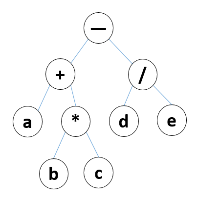

var tree = {
value: '-',
left: {
value: '+',
left: {
value: 'a'
},
right: {
value: '*',
left: {
value: 'b'
},
right: {
value: 'c'
}
}
},
right: {
value: '/',
left: {
value: 'd'
},
right: {
value: 'e'
}
}
}
https://leetcode-cn.com/problems/binary-tree-preorder-traversal/
// 前序遍历：访问根–>遍历左子树–>遍历右子树; "-", "+", "a", "*", "b", "c", "/", "d", "e"
https://leetcode-cn.com/problems/binary-tree-inorder-traversal/
// 中序遍历：遍历左子树–>访问根–>遍历右子树; "a", "+", "b", "*", "c", "-", "d", "/", "e"
https://leetcode-cn.com/problems/binary-tree-postorder-traversal/
// 后序遍历：遍历左子树–>遍历右子树–>访问根; "a", "b", "c", "*", "+", "d", "e", "/", "-"
// 广度遍历：按照层次一层层遍历;
// 前序遍历 递归
var prelistRec = []
var preOrderRec = function (node) {
if (node) {
prelistRec.push(node.value)
preOrderRec(node.left)
preOrderRec(node.right)
}
}
preOrderRec(tree)
console.log('前序遍历 递归', prelistRec)
// 前序遍历，非递归
var preListUnRec = []
var preOrderUnRecursion = function (node) {
if (node) {
var stack = [node]
while (stack.length !== 0) {
node = stack.pop()
preListUnRec.push(node.value)
if (node.right) stack.push(node.right)
if (node.left) stack.push(node.left)
}
}
}
preOrderUnRecursion(tree)
console.log('前序遍历，非递归', preListUnRec)
var inListRec = []
// 中序遍历
var inOrderRec = function (node) {
if (node) {
inOrderRec(node.left)
inListRec.push(node.value)
inOrderRec(node.right)
}
}
inOrderRec(tree)
console.log('中序遍历: ', inListRec);
// 中序遍历
var inListUnRec = []; //定义保存中序遍历结果的数组
var inOrderUnRec = function (node) {
if (node) { //判断二叉树是否为空
var stack = []; //建立一个栈
while (stack.length !== 0 || node) { //如果栈不为空或结点不为空，则循环遍历
if (node) { //如果结点不为空
stack.push(node); //将结点压入栈
node = node.left; //将左子树作为当前结点
} else { //左子树为空，即没有左子树的情况
node = stack.pop(); //将结点取出来
inListUnRec.push(node.value); //将取出结点的值存入数组中
node = node.right; //将右结点作为当前结点
}
}
}
}
inOrderUnRec(tree);
console.log('中序遍历: ', inListUnRec);
// 后序遍历
var postListRec = []; //定义保存后序遍历结果的数组
var postOrderRec = function (node) {
if (node) { //判断二叉树是否为空
postOrderRec(node.left); //递归遍历左子树
postOrderRec(node.right); //递归遍历右子树
postListRec.push(node.value); //将结点的值存入数组中
}
}
postOrderRec(tree);
console.log('后序遍历', postListRec);
// 后序遍历
var postListUnRec = []; //定义保存后序遍历结果的数组
var postOrderUnRec = function (node) {
if (node) { //判断二叉树是否为空
var stack = [node]; //将二叉树压入栈
var tmp = null; //定义缓存变量
while (stack.length !== 0) { //如果栈不为空，则循环遍历
tmp = stack[stack.length - 1]; //将栈顶的值保存在tmp中
if (tmp.left && node !== tmp.left && node !== tmp.right) { //如果存在左子树
stack.push(tmp.left); //将左子树结点压入栈
} else if (tmp.right && node !== tmp.right) { //如果结点存在右子树
stack.push(tmp.right); //将右子树压入栈中
} else {
postListUnRec.push(stack.pop().value);
node = tmp;
}
}
}
}
postOrderUnRec(tree);
console.log('后序遍历', postListUnRec);
// 广度遍历（队列）
var breadthList = []; //定义保存广度遍历结果的数组
var breadthTraversal = function (node) {
if (node) { //判断二叉树是否为空
var que = [node]; //将二叉树放入队列
while (que.length !== 0) { //判断队列是否为空
node = que.shift(); //从队列中取出一个结点
breadthList.push(node.value); //将取出结点的值保存到数组
if (node.left) que.push(node.left); //如果存在左子树，将左子树放入队列
if (node.right) que.push(node.right); //如果存在右子树，将右子树放入队列
}
}
}
breadthTraversal(tree);
console.log('广度遍历', breadthList);
// 深度遍历（递归）
function deepTraversal(node, nodeList) {
if (node)
{
nodeList.push(node)
let children = node.children
for (let i = 0; i < children.length; i++)
{
deepTraversal(children[i], nodeList)
}
}
return nodeList
}
// 深度遍历（栈）
function deepTraversal(node) {
let nodeList = []
if (node) {
let stack = []
stack.push(node)
while(stack.length !== 0) {
let childrenItem = stack.pop()
nodeList.push(childrenItem)
let childrenList = childrenItem.children
for (let i = childrenList.length-1; i >= 0; i--) {
stack.push(childrenList[i])
}
}
}
return nodeList
}
// 翻转二叉树
;(function () {
var invertTree = function (root) {
if (root) {
var temp = root.left;
// if (root.left && root.right) {
root.left = root.right;
root.right = temp;
// }
invertTree(root.left);
invertTree(root.right);
}
return root;
}
console.log('翻转二叉树', invertTree(tree))
})()